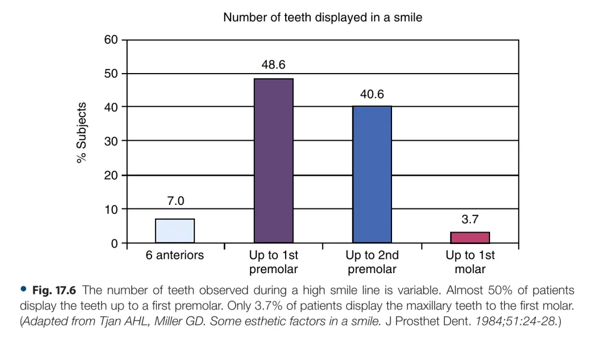
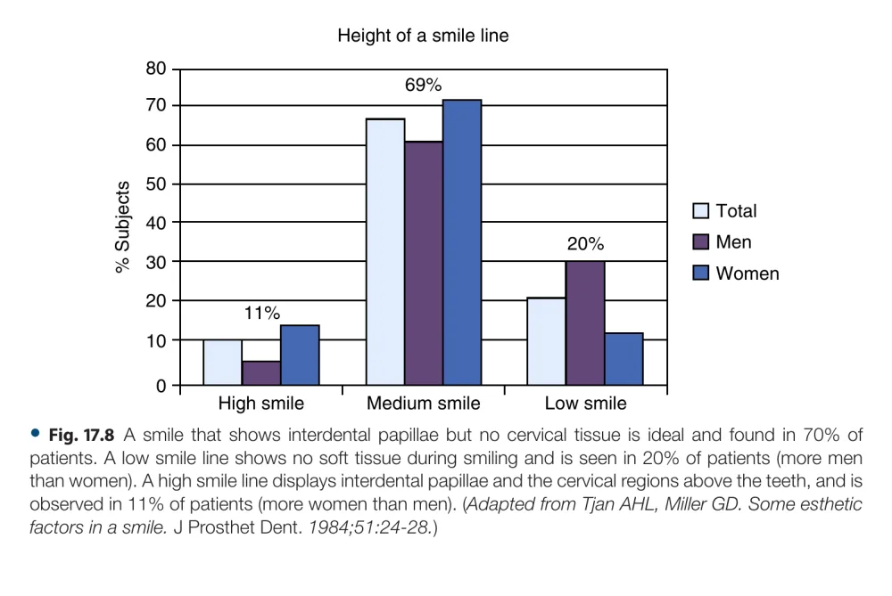

نسخه استخراجشده؛ ترجمه یا تأیید علمی انجام نشده است. وضعیت: captured
در درس پیش دیدی که تفاوت FP-1 و FP-2 در ظاهر ناحیهی سرویکالی است. ولی آیا بیمار اصلاً آن ناحیه را نشان میدهد؟ این پرسش، تصمیم را عوض میکند — و دادهها پاسخ روشنی دارند.
نخست، تعریف منطقهی زیبایی برای دو فک متفاوت است:
«منطقهی زیبایی یک بیمار هنگام لبخند برای قوس ماگزیلا و هنگام تلفظ صداهای سیبیلانت برای قوس مندیبل تعیین میشود.»
ماگزیلا با لبخند، مندیبل با گفتار. و دلیلش: «دندانهای مندیبل در منطقهی زیبایی هنگام صداهای سیبیلانت مشاهده میشوند، چون دندانهای بیشتری هنگام گفتار نمایان میشوند تا در حالت استراحت یا لبخند.»
پس در مندیبل، گفتار معیار ارزیابی است، نه لبخند.
و اکنون سه مجموعه داده که باید بدانی:
یکم — چند دندان در لبخند دیده میشود:
• تنها شش دندان قدامی: ۷٫۰ درصد
• تا پرمولر اول: ۴۸٫۶ درصد
• تا پرمولر دوم: ۴۰٫۶ درصد
• تا مولر اول: ۳٫۷ درصد
نتیجه: «تقریباً ۵۰ درصد بیماران دندانها را تا پرمولر اول نشان میدهند. تنها ۳٫۷ درصد بیماران دندانهای ماگزیلا را تا مولر اول نشان میدهند.»
یعنی منطقهی زیبایی برای نزدیک به ۹۰ درصد بیماران تا پرمولر امتداد دارد — نه فقط شش دندان قدامی، و تقریباً هرگز تا مولر.
دوم — ارتفاع خط لبخند:
• خط لبخند بالا: ۱۱ درصد — هم پاپیلای بیندندانی و هم نواحی سرویکالی بالای دندانها را نشان میدهد. در زنان شایعتر از مردان.
• خط لبخند متوسط: ۶۹ درصد — پاپیلای بیندندانی را نشان میدهد ولی بافت سرویکالی را نه. این را «ایدهآل» مینامند.
• خط لبخند پایین: ۲۰ درصد — هیچ بافت نرمی هنگام لبخند دیده نمیشود. در مردان شایعتر از زنان.
عدد ۱۱ درصد را نگه دار. تنها در حدود یک نفر از هر ۹ بیمار، ناحیهی سرویکالی هنگام لبخند دیده میشود — و دقیقاً همینجاست که تفاوت FP-1 و FP-2 آشکار میشود.
سوم — و این داده تصمیمساز است: سن.
«با مسنتر شدن بیمار، منطقهی زیبایی ماگزیلا تغییر میکند. تنها ۱۰ درصد بیماران جوانتر هیچ بافت نرمی هنگام لبخند نشان نمیدهند، در حالی که ۳۰ درصد افراد ۶۰ ساله و ۵۰ درصد افراد ۸۰ ساله نواحی لثهای را هنگام لبخند نشان نمیدهند.»
۱۰ درصد ← ۳۰ درصد ← ۵۰ درصد. با افزایش سن، لب بالا افتادگی پیدا میکند و نمایش لثه کم میشود.
و یک تعریف دقیقتر از «لبخند لثهای» که در بحث FP-3 به کار میآید:
«تقریباً ۷ درصد مردان و ۱۴ درصد زنان لبخند بالا یا لبخند «لثهای» دارند و بیش از ۲ میلیمتر لثه بالای مارجین آزاد لثهی دندانها را نمایش میدهند.»
۷ درصد در برابر ۱۴ درصد — یعنی دو برابر در زنان. و اینجا معیار عددی هم داری: بیش از ۲ میلیمتر نمایش لثه. این معیار را میتوانی مستقیماً سر صندلی اندازه بگیری.
و تعریف خط لبخند بالای ایدهآل: «خط لبخند بالای ایدهآل، پاپیلای بیندندانی دندانهای قدامی ماگزیلا را نمایش میدهد ولی بافت نرم بالای نواحی میانسرویکالی را نه.»
و مندیبل با افزایش سن کمتر تغییر میکند: «موقعیت پایین لب هنگام گفتار بهاندازهی خط لبخند بالا تحت تأثیر قرار نمیگیرد. تنها ۱۰ درصد بیماران مسن بافت نرم مندیبل را هنگام گفتار نشان میدهند.»
پس بالا رفتن سن، ماگزیلا را بخشندهتر میکند — و همین یعنی FP-2 در بیمار مسنتر بسیار کمخطرتر از بیمار جوان است.

دادههای بخش پیش تنها آمار نیستند؛ نتیجهی عملی صریحی از آنها به دست میآید.
«اگر خط بالای لب هنگام لبخند یا خط پایین لب هنگام گفتار نواحی سرویکالی را نمایش ندهند، دندانهای بلندتر معمولاً هیچ پیامد زیباییشناختی ندارند، بهشرط آنکه بیمار پیش از درمان آگاه شده باشد.»
این جمله را دو بار بخوان. در آن دو شرط مستقل هست:
شرط اول، آناتومیک: ناحیهی سرویکالی دیده نشود.
شرط دوم، ارتباطی: بیمار پیش از درمان آگاه شده باشد.
و نکته این است که شرط دوم را نمیتوان با تکنیک جبران کرد. اگر بیمار پس از تحویل بفهمد دندانهایش بلندتر خواهند بود، ناهمخوانی آناتومیک ناگهان تبدیل به یک شکایت میشود — حتی اگر هیچکس آن ناحیه را نبیند.
پس روند تصمیمگیریات چنین میشود:
۱. خط لبخند بیمار را بسنج (بالا ۱۱٪، متوسط ۶۹٪، پایین ۲۰٪).
۲. در مندیبل، بهجای لبخند، تلفظ صداهای سیبیلانت را ارزیابی کن.
۳. سن را در نظر بگیر — بیمار مسنتر معمولاً لثهی کمتری نشان میدهد.
۴. اگر ناحیهی سرویکالی دیده نمیشود، FP-2 گزینهی معقولی است — بهشرط آگاهسازی پیشین.
۵. اگر خط لبخند بالاست و بیش از دو دندان مجاور غایب است، بدان که FP-1 دشوار خواهد بود و افزایش استخوان و بافت نرم احتمالاً لازم است.
و یک اصلاح طراحی که در همین بحث مطرح است و اغلب نادیده گرفته میشود:
«میز اکلوزال نیز معمولاً در نواحی غیرزیبایی اصلاح میشود تا با اندازه و موقعیت ایمپلنت همخوان شود و نیروهای عمودی را به بدنهی ایمپلنت هدایت کند.»
و مثالش: «برای نمونه، پروتزهای ایمپلنتپشتیبان خلفی مندیبل، میز اکلوزال باریکتری بهبهای کانتور باکال دارند، چون ایمپلنت قطر کوچکتری دارد و در ناحیهی فوسای مرکزی دندان قرار گرفته است.»
این دقیقاً همان اصل نهم IPO است که در یونیت پیش دیدی — «صفحهی اکلوزال باریک». و اکنون میبینی که چگونه با تصمیم زیبایی گره میخورد: در ناحیهی غیرزیبایی، بیومکانیک بر کانتور مقدم میشود.
و برعکس آن هم درست است: در منطقهی زیبایی، ناچاری بخشی از این آزادی را واگذار کنی — و این یکی از تنشهای همیشگی پروتز ایمپلنت است.
